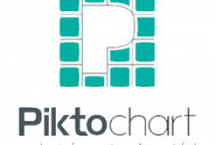

Es un software y sitio web de diseño gráfico y composición de imágenes simplificado. Se puede utilizar de forma gratuita, pero con la alternativa de pagar para tener opciones avanzadas. Entre los diseños que puedes crear tienes logo, posters, flyers, portadas, folletos y publicaciones para redes sociales entre otras cosas.
Funciona utilizando tus datos de Google, Facebook o correo y bajo plataformas Windows, Mac, Linux, iOS, Android. Puede ser usada en navegadores como Chrome, Firefox, Edge o Safari y exportar archivos en PNG, PDF, JPG, GIF y video MP4. Es recomendado usarlo en una PC, tiene muchos recursos y sus herramientas te garantizan un trabajo profesional.

Picktochart es una herramienta en línea que nos permite diseñar y crear infografías para nuestros proyectos o presentaciones de forma gratuita, es fácil para registrarse y de usar, no lleva mucho tiempo aprender a manejarlo. La puedes localizar en https://piktochart.com/
Cuenta con múltiples opciones para gráficos, dispone de una amplia biblioteca y es un programa que no necesitas tener mucho conocimiento de HTML. Permite exportar la infografía en PNG, JPG, HTML y publicarla en redes sociales.
.
No se necesitan grandes conocimientos para utilizarlo ya que tiene una interfaz intuitiva y fácil de utilizar, con varias plantillas y elementos multimedia que puedes agregar.
Se puede막ajar de https://www.canva.com/ y podrás ver cómo utilizar esta herramienta enhttps://www.youtube.com/watch?v=kdE6ZmT_5MI
A través de este enlace se observa cómo utilizar esta herramienta:
https://www.youtube.com/watch?v=4lo6XPRrg9Q